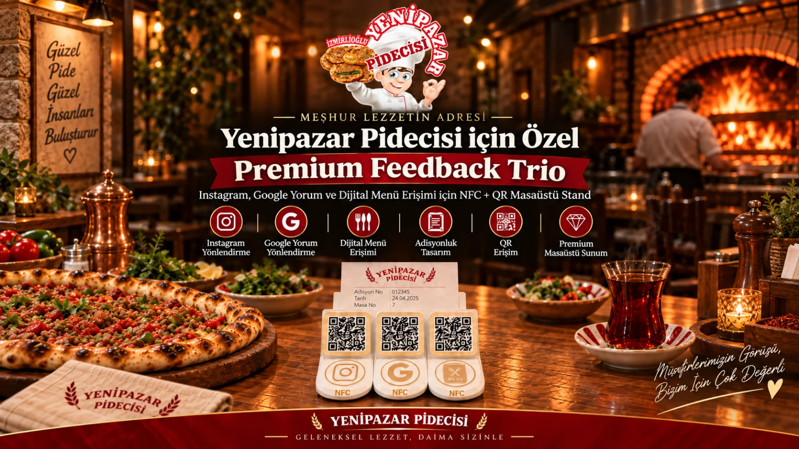
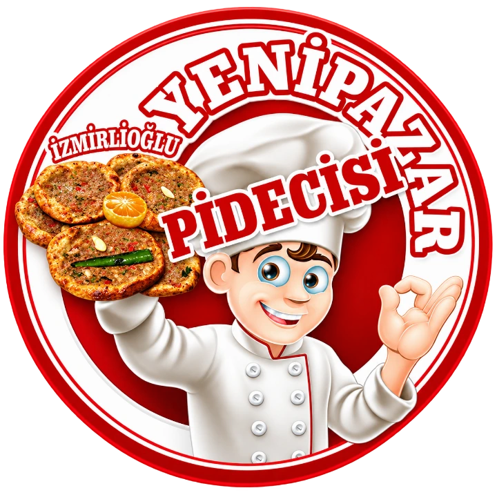

İhtiyaç
Adet, kullanım noktası, ölçü ve marka gereksinimini netleştiririz.
KURUMSAL ÜRETİM
Tek bir sektöre bağlı kalmadan; işletmeye özel fiziksel ürün, promosyon, masaüstü çözüm ve saha uygulamalarını tasarımdan üretime tek süreçte yürütüyoruz.
SÜREÇ
Kurumsal işlerde ürün biçimi hazır kalıba göre değil, kullanım senaryosuna göre netleşir.
Adet, kullanım noktası, ölçü ve marka gereksinimini netleştiririz.
Ürünü marka kimliği ve üretim koşullarına göre geliştiririz.
Onaylanan modeli 3D baskı üretim akışına alırız.
Kontrol, paketleme ve teslim / kargo adımıyla işi tamamlarız.
SAHADAN KURUMSAL İŞLER
Yayınlanan kartlar panel ve saha kayıtlarından gelir. Ayrıntısı bulunan işler proje sayfasına bağlanır.

 Circolo Kuşadası
Circolo KuşadasıCircolo Kuşadası için adisyon tutuculu 5 adet BG Studio NFC Premium Feedback Duo standı tasarlanıp işletmeye entegre edildi. Her stand 2 NFC ve 2 QR erişimiyle çalışacak şekilde hazırlanarak toplam 10 NFC + 10 QR altyapısı kuruldu. Standların adisyon tutucu bölümü sayesinde hesap ve adisyon kağıtları masa üzerinde düzenli biçimde sunulurken, aynı ürün üzerinden dijital müşteri etkileşimi sağlanıyor. Misafirler NFC veya QR üzerinden doğrudan Google yorum ekranına ya da Circolo’nun Instagram hesabına geçebiliyor. Google ve Instagram yönlendirmeleri, NFC ve QR erişimleri, stand bazlı etkileşimler ve ziyaret verileri BG Studio NFC işletme panelinden takip ediliyor. Google tarafında canlı puan, toplam yorum sayısı ve güncel yorum verileri de sistem içerisinde görüntüleniyor.
Proje detayını gör ↗
 Planet Yucca
Planet YuccaPlanet Yucca için adisyon tutuculu 10 adet BG Studio NFC Premium Feedback Duo standı tasarlanıp işletmeye entegre edildi. Her stand 2 NFC ve 2 QR erişimiyle çalışacak şekilde hazırlanarak toplam 20 NFC + 20 QR altyapısı kuruldu. Standların adisyon tutucu bölümü sayesinde hesap ve adisyon kağıtları masa üzerinde düzenli biçimde sunulurken, aynı ürün üzerinden dijital müşteri etkileşimi sağlanıyor. Misafirler NFC veya QR üzerinden doğrudan Google yorum ekranına ya da Planet Yucca’nın Instagram hesabına geçebiliyor. Google ve Instagram yönlendirmeleri, NFC ve QR erişimleri, stand bazlı etkileşimler ve ziyaret verileri BG Studio NFC işletme panelinden takip ediliyor. Google tarafında canlı puan, toplam yorum sayısı ve güncel yorum verileri de sistem içerisinde görüntüleniyor.
Proje detayını gör ↗
 İstavrit Restaurant
İstavrit Restaurantİstavrit Restaurant için 10 masalık BG Studio NFC Başlangıç Paketi kuruldu. Her masa için özel hazırlanan toplam 10 adet NFC + QR stand, masa bazlı erişim altyapısıyla BG Studio NFC Sistemine bağlandı. Misafirler telefonlarını standa yaklaştırarak veya QR kodu okutarak dijital menüye, Instagram hesabına ve değerlendirme akışına erişebiliyor. Değerlendirme sürecinde misafir önce BG Studio değerlendirme paneline yönlendiriliyor, ardından Google yorum adımına geçebiliyor. İşletme tarafında masa bazlı NFC + QR etkileşimleri, dijital menü erişimleri ve sistem kullanımı BG Studio NFC işletme paneli üzerinden takip ediliyor. Böylece menü, sosyal medya erişimi, müşteri değerlendirmesi ve masa etkileşimleri tek sistem altında yönetiliyor.
Proje detayını gör ↗
 Yusuf Şef Restaurant
Yusuf Şef RestaurantYusuf Şef için 15 masalık BG Studio NFC Profesyonel Paket kurulumu gerçekleştirildi. İşletmeye özel hazırlanan 15 adet NFC + QR stand, masa bazlı erişim altyapısıyla BG Studio NFC Sistemine bağlandı. Misafirler NFC veya QR üzerinden Akıllı Menü, Instagram ve değerlendirme akışına erişebiliyor. Akıllı Menü modülünde Türkçe ve İngilizce menü, ürün içerikleri, alerjen bilgileri ve yaklaşık kalori bilgileri sunuluyor. Değerlendirme akışında misafirler önce BG Studio değerlendirme paneline yönlendiriliyor, ardından Google yorum adımına geçebiliyor. İşletme; menü, değerlendirme, sosyal medya ve masa bazlı NFC + QR etkileşimlerini kendisine özel BG Studio NFC işletme paneli üzerinden yönetip takip edebiliyor. Böylece menü, müşteri geri bildirimi, sosyal medya erişimi ve kullanım verileri tek sistem altında toplanıyor.
Proje detayını gör ↗
 Naz Balık Restaurant
Naz Balık RestaurantNaz Balık Restaurant’ın 15 masası için Google Reviews ve Tripadvisor yorum yönlendirmesine özel toplam 15 adet masaüstü QR yorum kartı tasarlanıp uygulandı. Her kartta iki platform için ayrı QR yönlendirmeleri kurgulandı ve tasarım restoranın marka kimliğine özel olarak hazırlandı. Misafirlerin masa üzerinden hızlıca Google veya Tripadvisor yorum sayfasına ulaşabildiği bu sistem, fiziksel kart ile dijital değerlendirme akışını tek noktada bir araya getiriyor.
Proje detayını gör ↗

Yenipazar PidecisiYenipazar Pidecisi için BG Studio NFC Premium Feedback Trio sistemi, adisyon tutuculu masaüstü stand formunda tasarlanıp işletmeye teslim edildi. Stand, 3 NFC ve 3 QR erişim noktasıyla BG Studio NFC altyapısına bağlandı. Adisyon tutucu bölümü sayesinde hesap ve adisyon kağıtları masa veya kasa üzerinde düzenli biçimde sunulurken, aynı ürün üzerinden müşterilerin dijital etkileşim akışlarına erişmesi sağlanıyor. NFC ve QR seçenekleri, müşterinin telefonuna uygun erişim yöntemini tercih etmesine imkân tanıyor. Premium Feedback Trio altyapısıyla değerlendirme, Google yorum ve ilgili dijital yönlendirme akışları BG Studio NFC sistemi altında yönetiliyor. NFC ve QR kullanımları, yönlendirmeler ve ziyaret etkileşimleri işletmeye özel panel üzerinden takip edilebiliyor.
Proje detayını gör ↗
 Koala Petshop
Koala PetshopKoala Petshop için BG Studio NFC ürün ailesine ait Hızlı Bağlantı Standı tasarlanıp üretildi. İşletmenin Google, Instagram ve WhatsApp kanalları tek bir fiziksel stand üzerinde bir araya getirildi. Müşteriler NFC erişimi veya stand üzerindeki ayrı QR kodlar üzerinden ilgili dijital kanala hızlıca geçebiliyor. İşletmeye özel tasarlanan stand sayesinde sosyal medya, iletişim ve Google erişimleri masa veya banko üzerinde düzenli, görünür ve tek noktadan ulaşılabilir hale getirildi.
Proje detayını gör ↗
 Kuşadası Asansör
Kuşadası AsansörKuşadası Asansör için marka logosu ve iletişim bilgilerine özel 100 adet kurumsal anahtarlık tasarlanıp 3D baskı ile üretildi. Anahtarlıklar, işletmenin isteği üzerine mavi-beyaz renklerde hazırlanarak metal halka detaylarıyla kurumsal dağıtıma uygun şekilde tamamlandı.
Proje detayını gör ↗TOPLU ÜRETİM
Kurumsal anahtarlık, masaüstü ürün, stand veya işletmeye özel parça için kapsamı birlikte netleştirelim.